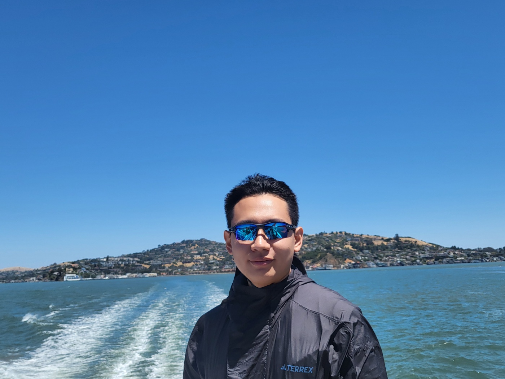

- Before attending USC, I earned my undergraduate degree in Computer Science from the University of Texas at Dallas (watch here), where I conducted research in NLP (particularly focusing on data, LLMs, and multimodal systems) under the guidance of Dr. Vincent Ng.
- In my free time, I enjoy running outdoors and hanging out with friends and family. I'm a longtime Mavs supporter.
- UTDallas Commencement Video